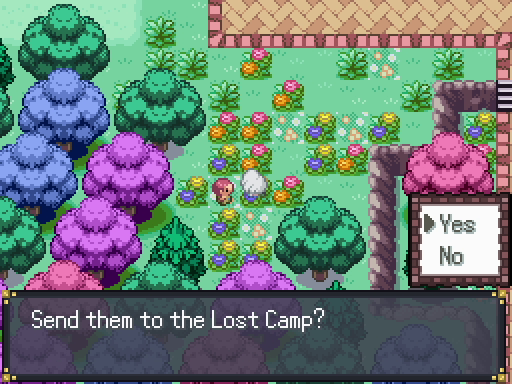
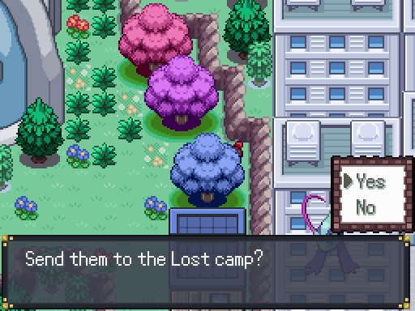
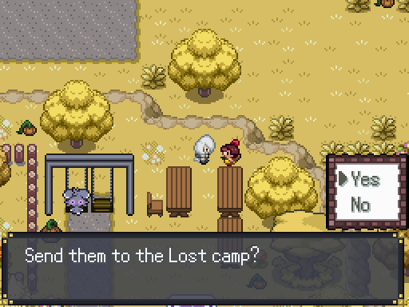

Side Activities
Sawk and Throh

Now that we have Ditto, we can breed the Throh we got from earlier. Once you've bred one, you can give your old one to the Battle Girl inside the daycare. She'll give us a Sawk in return. You could have done this earlier, but its good to have an extra Throh as a backup in case you need it.
Route 3 Mystery Egg

While we're at the daycare, there's also another Egg that we need. Go ahead and breed a Phantump with the Ditto we got earlier, or if you have a female Phantump you can also choose a male from its corresponding Egg group. Oddish, Seedot, Cherubi, Duskull, or Koffing are pretty easy options to catch. Either way, once you have a Phantump Egg, don't hatch it. Instead, head over to the Route 3 Marketplace and talk to the Youngster above. He'll trade you an Egg for the Phantump Egg. You can soft reset the Egg for natures/IVs/abilities, but the species is set when the save file is created. The possible species are:
- Absol
- Aron
- Axew
- Azurill
- Cottonee
- Darumaka
- Dhelmise
- Drilbur
- Joltik
- Larvesta
- Larvitar
- Mareanie
- Mienfoo
- Pawniard
- Sneasel
- Solosis
- Starly
- Stufful
- Togepi
- Trapinch
- Wishiwashi
Out of all of these, only Togepi, Larvitar, and Drilbur are unobtainable by other means in this version. Everything else, we'll be able to get later on in the game at various points, so don't worry too much not getting your favorites. Each of these Pokemon are really good at this point in the game, so it might be useful to level them up at the Pokemon breeder in Goldenleaf Town.
Lost Camp

There's one last new sidequest here that we can do. Head over to Route 4, and from Akuwa Town turn left and meet up with Mosely. She'll reveal that she accidentally lost her key somewhere in Route 4. If you've gotten it already, you can talk to her again to enter. If not, you can find the key
 just a little off the path north of the gold Healing Star. She'll then open the gate and you can now visit the Lost Camp. Maman, the caretaker of the area, will let you know that the place is functionally an orphanage. Talk to her again in the garden and she'll ask for you guide kids here if you find any. We can go ahead and do that now.
just a little off the path north of the gold Healing Star. She'll then open the gate and you can now visit the Lost Camp. Maman, the caretaker of the area, will let you know that the place is functionally an orphanage. Talk to her again in the garden and she'll ask for you guide kids here if you find any. We can go ahead and do that now.
| Trainer | Location |
| Orphan 1: Teddie | Route 4 near the Lost Camp, in a patch of grass |
| Orphan 2: Jessibelle | Left of Akuwa Town Aquarium, behind a tree |
| Orphan 3: Marissa | Wispy Path, in the park with Espurr |
| Orphan 4: James | Spring of Purification, left branch from the entrance |
| Orphan 5: Andrew | Abandoned Sewers, in the middle-bottom area below the Sewerk |
After you've found Andrew, he'll sell some EV/Friendship berries. His initial stock is small, but we can expand his stock by donating to Maman. The first and second donations will cost
 5000 total, so if you have the cash I'd recommend you just donate it now. Everytime you leave after donating, the area will undergo reconstruction. Reconstruction will be done if you leave the Route 4 area and return.
5000 total, so if you have the cash I'd recommend you just donate it now. Everytime you leave after donating, the area will undergo reconstruction. Reconstruction will be done if you leave the Route 4 area and return.
Reminders
We won't be able to return here for a while, so here's a few side activities that you should complete. Items marked with a * won't be available anymore upon our return.
- Mystery Egg Trade
- Finding Ditto
- Goldenwood Forest Revisited*
- Mirage Woods - Get Itemfinder
- Zumi's Pokedex Quest